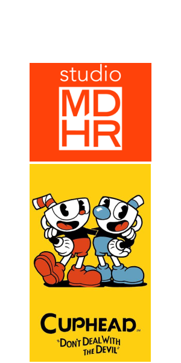

- Ano de lançamento: 2017.
- Plataformas: PlayStation 4, Nintendo Switch, Xbox One, Microsoft Windows e macOS.
- Gênero: Shoot 'em up.
Cuphead é um jogo estilo run and gun todo desenhado à mão e inspirado nos desenhos animados da década de 30. Com uma identidade visual e sonora cativante, o jogo pode parecer bobo mas é, na verdade, EXTREMAMENTE difícil. Mesmo com as típicas mecânicas simples, a dificuldade vai aumentando conforme você avança no jogo. Se você gosta de desafios, esse é o seu jogo.